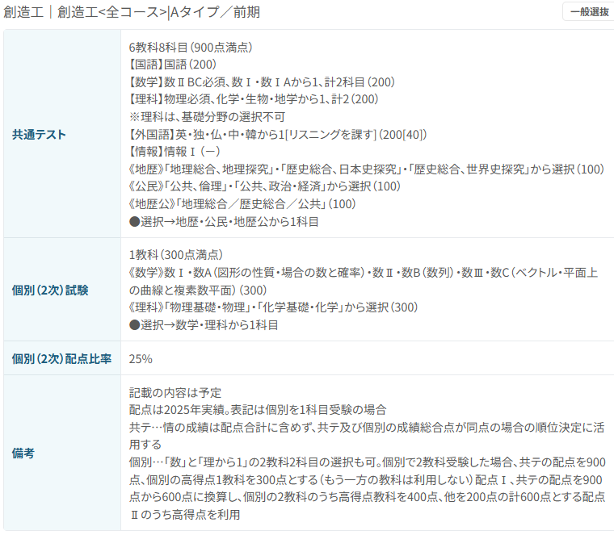
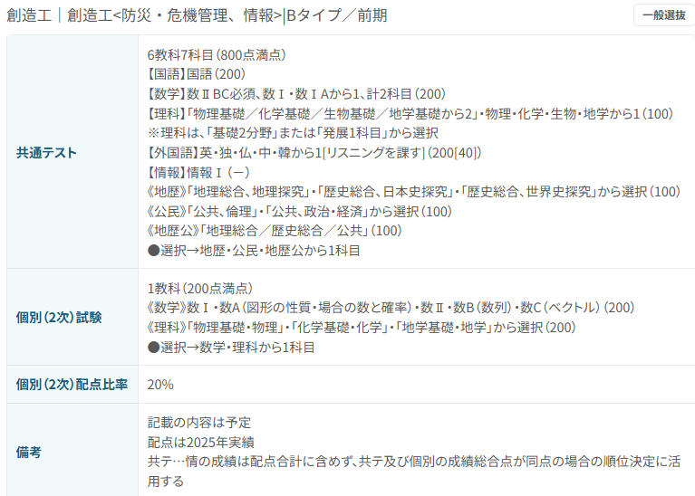

■受験方法について
前期・後期の一般受験だけではなく、総合型選抜や学校推薦型選抜など多くの受験方式があります。 そのため、これまでの活動や努力といった「人柄の部分」を評価してくれる点が魅力的であると思います。 さらに、情報コースは今年度から募集人数を30人増やしているため、入学のチャンスが多くなっています。 情報系を学びたいと考えている学生を多く受け入れようとしている点が、魅力の１つとして挙げられます。
■一般選抜Aタイプ
前期Aタイプでは指定された共通テスト９科目(情報Ⅰ除く。ただし、2027年度入試から「情報Ⅰ」を配点化。)に加え、２次試験は「数学」「理科１科目」「数学＋理科１科目」の中から 選択することができる。そのため、得意な科目で入試に挑戦が可能。
■一般選抜Bタイプ
前期Aタイプでは指定された共通テスト９科目、理科は理科基礎の選択が可能。(情報Ⅰ除く。ただし、2027年度入試から「情報Ⅰ」を配点化。)に加え、２次試験は「数学」「理科１科目」「数学＋理科１科目」の中から 選択することができる。そのため、文系を選択していた人も得意な科目で入試に挑戦が可能。
■学校推薦型選抜

指定された共通テスト4~5科目に加え、書類(志望動機等)による、学校型推薦型選抜も実施。 これまでの活動や、人柄の部分、さらに入学に対する熱い気持ちを評価してくれます。
🌎その他の選抜方式
・３年次編入試験
・私費外国人留学生選抜
・社会人特別選抜
など、特定の対象者向けの入試も実施しています。